Kurre Sumange’
“Dan di antara tanda-tanda kebesaran-Nya ialah Dia menciptakan pasangan-pasangan untukmu agar kamu cenderung dan merasa tenteram kepadanya, dan Dia menjadikan di antaramu rasa kasih dan sayang.”
QS. AR-RUM : 21
Di bawah atap perahu tongkonan yang menjulang ke langit Toraja, dua hati yang dipertemukan kini hendak membangun rumah tangganya. Dengan penuh syukur — kurre sumange’, terima kasih atas berkat Tuhan — kami mengundang Bapak/Ibu/Saudara/i untuk hadir dan memberi doa restu pada hari bahagia kami.
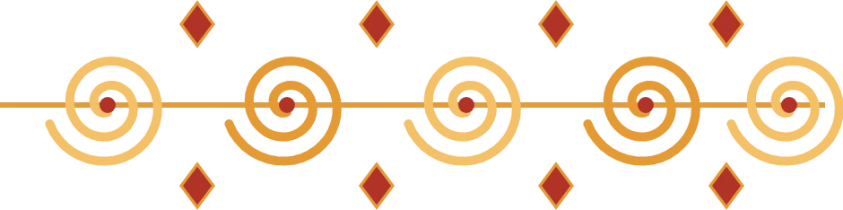
Pengantin Putri & Putra
Dua sejoli berbahagia dalam busana adat Toraja
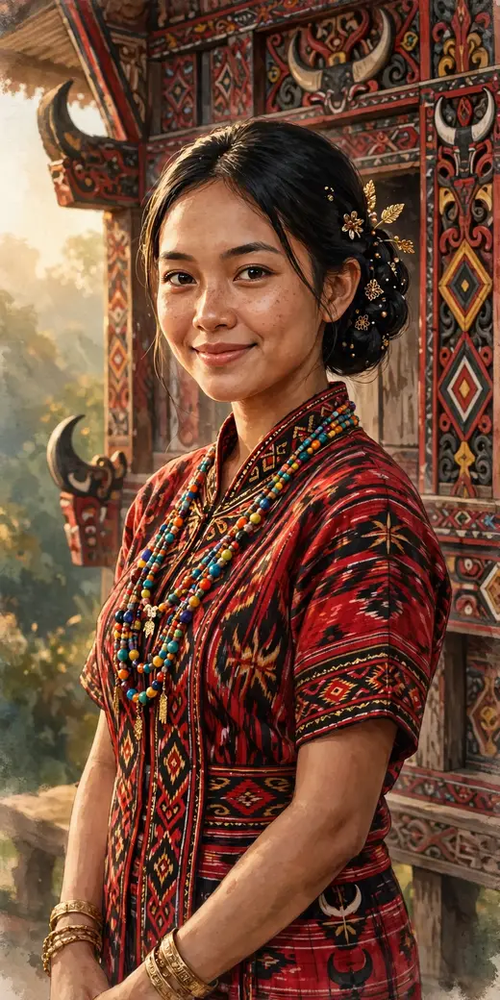
Meyzsa Putri Ananda
Putri dari
Bapak H. Muhammad Ridwan
& Ibu Hj. Siti Aminah
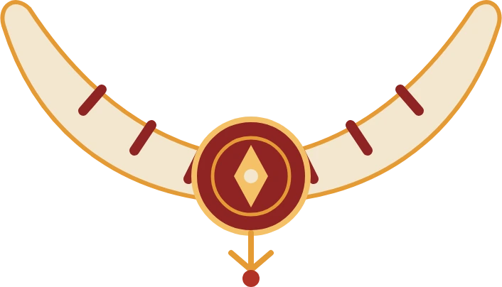
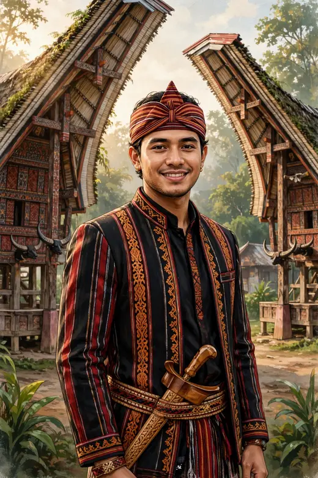
Ahmad Fahrezzi Pratama
Putra dari
Bapak H. Bambang Sutrisno
& Ibu Hj. Ratna Dewi
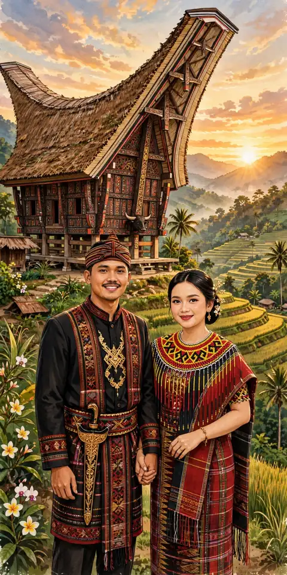
Di kaki tongkonan pusaka, tempat kisah kami berakar.
Kisah Tongkonan Kami
Perjalanan kisah kami, dari perjumpaan pertama hingga hari bahagia
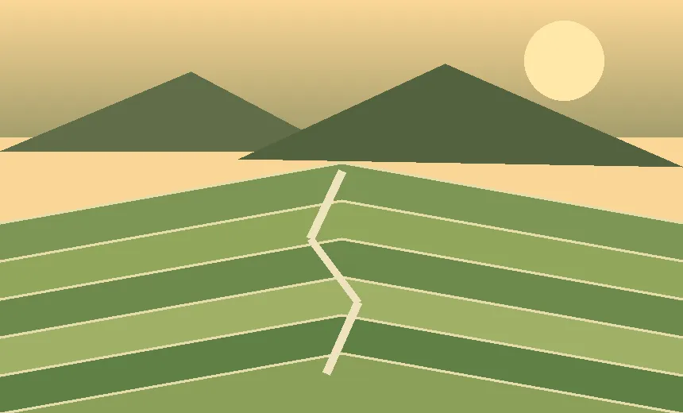
1234Menuruni lembah Toraja: dari kampung adat menyusuri sawah bertingkat, menuju tongkonan keluarga — tempat kisah kami pulang.
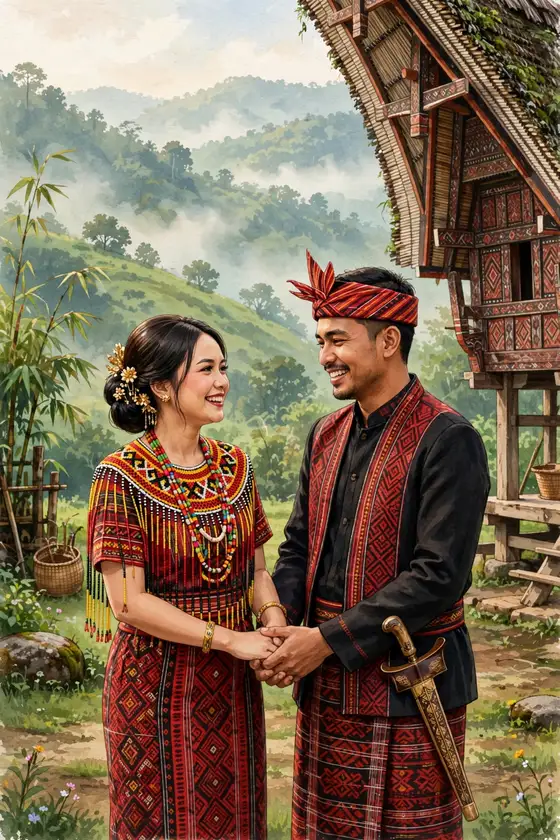
Berawal dari pertemuan sederhana di perantauan — obrolan tentang kampung halaman dan rumah adat hari itu menjadi awal perjalanan kisah kami.
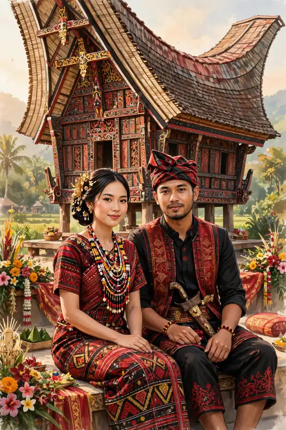
Di hadapan keluarga tercinta, Fahrezzi menyampaikan niat sucinya. Dengan restu kedua orang tua, Meyzsa menerimanya dengan hati berbunga-bunga.
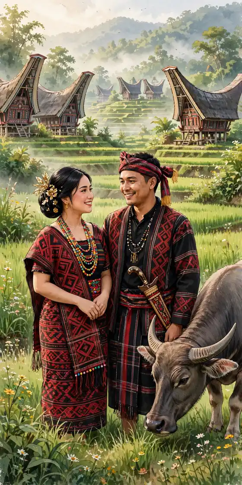
Seperti tongkonan yang menaungi seluruh keluarga besar, dua keluarga kami saling mengenal dan menyatukan cerita serta doa, hingga hari bahagia terasa kian dekat.
Sabtu, 12 Juni 2027 — bab terindah kisah kami dimulai. Kami mohon doa restu agar rumah tangga ini kokoh seperti tongkonan, diberkahi hingga selamanya.
Linimasa & teks kisah di atas adalah contoh untuk tampilan tema.
Menuju Hari Bahagia
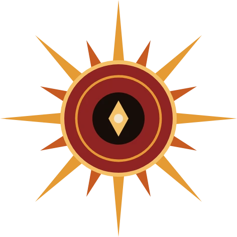
Sabtu, 12 Juni 2027 — Jakarta
Akad Nikah
Masjid Agung Al-Azhar
Jakarta Selatan
Resepsi
The Ritz-Carlton Jakarta, Pacific Place
Jakarta Selatan
Dresscode Tamu
Berkenan hadir dengan nuansa warna berikut
Panduan contoh: busana formal atau semi-formal dengan nuansa di atas akan menyatu indah dengan dekorasi ukiran kami. Terima kasih atas pengertiannya.
Denah & Info Lokasi
Alamat lengkap & patokan menuju venue (contoh)
Akad Nikah — Masjid Agung Al-Azhar
Jl. Sisingamangaraja No. 1, Kebayoran Baru, Jakarta Selatan.
Patokan: kompleks Al-Azhar di sisi jalan utama Sisingamangaraja, mudah dijangkau kendaraan pribadi maupun transportasi umum. Area parkir tersedia di sekitar kompleks; tamu disarankan tiba ±30 menit lebih awal.
Resepsi — The Ritz-Carlton Jakarta, Pacific Place
Jl. Jend. Sudirman Kav. 52–53, SCBD, Senayan, Jakarta Selatan.
Patokan: berada di kawasan SCBD, terhubung dengan Pacific Place Mall; masuk melalui lobi utama hotel. Area parkir tersedia di gedung mal; tamu disarankan tiba ±30 menit lebih awal.
Galeri Tongkonan
Delapan potret di tanah Toraja — ketuk untuk memperbesar
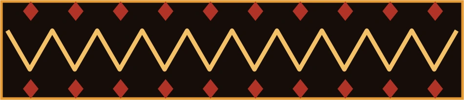
Video Teaser
Sepotong kisah kami dalam bingkai bergerak
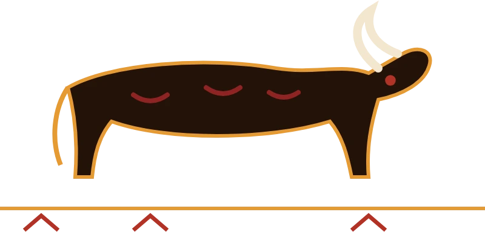
Video teaser — contoh (dirender dari foto pasangan tema ini dengan lagu pengiring; pada undangan asli dapat diganti video prewedding mempelai).
Siaran Langsung
Untuk keluarga & sahabat yang berhalangan hadir langsung
Resepsi Pernikahan
Sabtu, 12 Juni 2027 · mulai 11.00 WIB
menyesuaikan jam resepsi — The Ritz-Carlton Jakarta, Pacific Place
Tautan contoh (demo) — pada undangan asli, tombol ini mengarah ke siaran langsung mempelai dan aktif menjelang acara.
Abadikan momen bahagia Anda dan tandai dengan tagar resmi kami.
Galeri Tamu
Bagikan momen bahagia Anda selama acara — unggah foto Anda di sini dan tandai juga dengan tagar #MeyzsaFahrezzi.
Jadilah yang pertama membagikan momen — ketuk tombol unggah.
Contoh — foto tersimpan di perangkat ini saja (penyimpanan lokal peramban), tidak diunggah ke server.
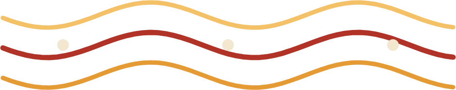
Dinding Ucapan
Konfirmasi kehadiran & tuliskan doa terbaik Anda
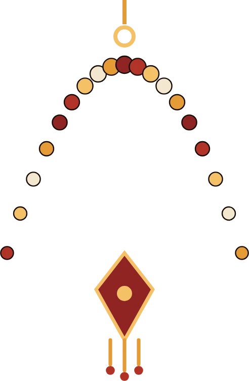
Fitur demo pada contoh undangan ini — ucapan tersimpan hanya di perangkat Anda dan tidak terkirim ke server.
Presensi Digital
Pindai kode QR ini atau isi buku tamu saat tiba di lokasi
Kode QR membuka halaman undangan yang sedang Anda baca — tunjukkan kepada penerima tamu saat check-in.
Fitur demo pada contoh undangan ini — data check-in tersimpan hanya di perangkat Anda.
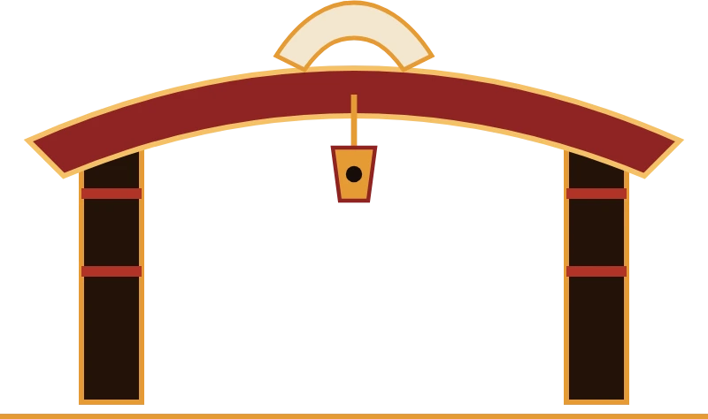
Tanda Kasih
Doa restu Anda adalah hadiah terindah. Bagi yang berkenan memberi tanda kasih:
Nomor di atas adalah contoh untuk keperluan demo tampilan undangan.
Kediaman Mempelai Wanita
Jl. Melati Indah No. 12, Kebayoran Baru,
Jakarta Selatan 12120 (alamat contoh)
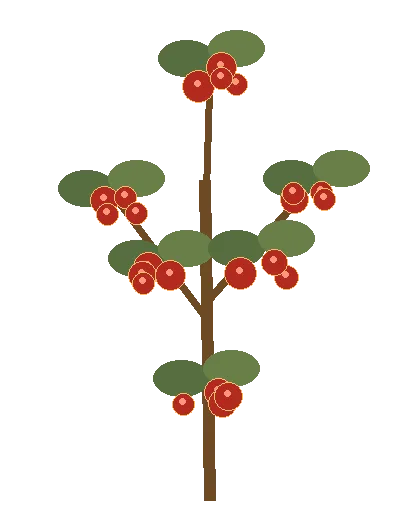
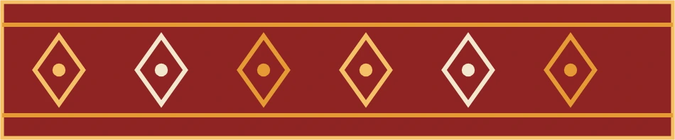
Turut Mengundang
Segenap keluarga besar kedua mempelai
Keluarga Mempelai Wanita
Keluarga Besar Ridwan — Jakarta
Keluarga Besar Aminah — Bogor
Beserta segenap kerabat & handai tolan
Keluarga Mempelai Pria
Keluarga Besar Sutrisno — Jakarta
Keluarga Besar Dewi — Tangerang
Beserta segenap kerabat & handai tolan
Susunan keluarga di atas adalah contoh untuk tampilan tema.
Merupakan suatu kehormatan dan kebahagiaan bagi kami beserta keluarga apabila Bapak/Ibu/Saudara/i berkenan hadir dan memberikan doa restu kepada kedua mempelai.
KAMI YANG BERBAHAGIA
Kurre sumange’ — terima kasih, dan sampai jumpa di hari bahagia.
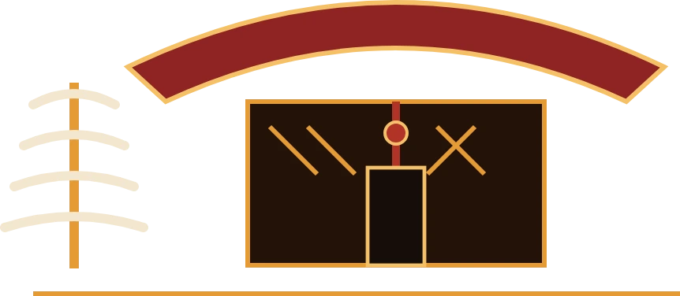
Undangan digital contoh “Tongkonan Pusaka” oleh UndangYa! — seluruh nama, tanggal, dan nomor adalah data contoh.
Musik latar: “Petals on the Stone Floor”.